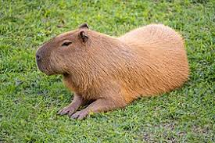
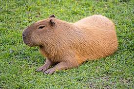

Sobre as Capivaras
Capivaras são seres interessantes e totalmente sociáveis, não tendo medo nem dos maiores predadores.
Publicado em: 31 de julho de 2024
Capivaras são seres interessantes e totalmente sociáveis, não tendo medo nem dos maiores predadores.
Publicado em: 31 de julho de 2024
Segundo fontes teóricas, as Capivaras seriam seres de outro mundo vindo nos observar.
Publicado em: 30 de julho de 2024